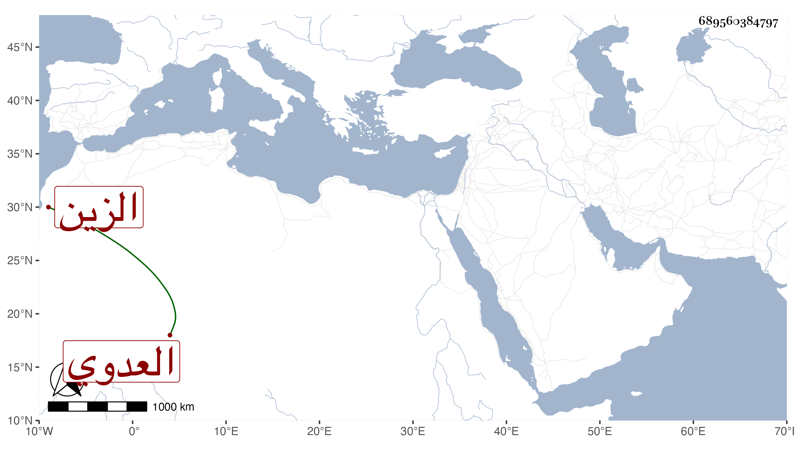

0902Sakhawi.DawLamic.ITO20230111-ara1.EIS1600.689560384797
Biography ID: 689560384797
292
عبد الرحمن بن علي بن محمد بن عبد الرحمن الزين العدوي نسبا فيما قرأته بخطه القاهري المالكي أخو محمد جدي لأمي وذاك الأكبر . اشتغل وقرأ القرآن وسمع علي ابن الكويك والولي العراقي ونسخ لنفسه إلى أثناء الاجازة من التوضيح للاقفهسي شرح ابن الحاجب وأدب بعض أبناء المعتبرين وكان خيرا . مات في حياة أمه يوم الخميس سادس رجب سنة عشرين عن نحو أربع وعشرين عاما ودفن بحوش البيبرسية رحمه الله وايانا وعوضه الجنة .
